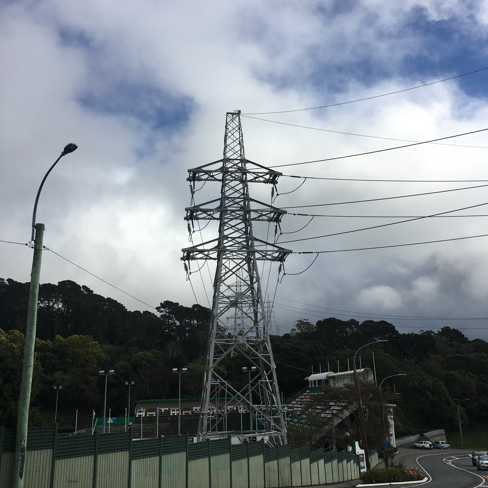
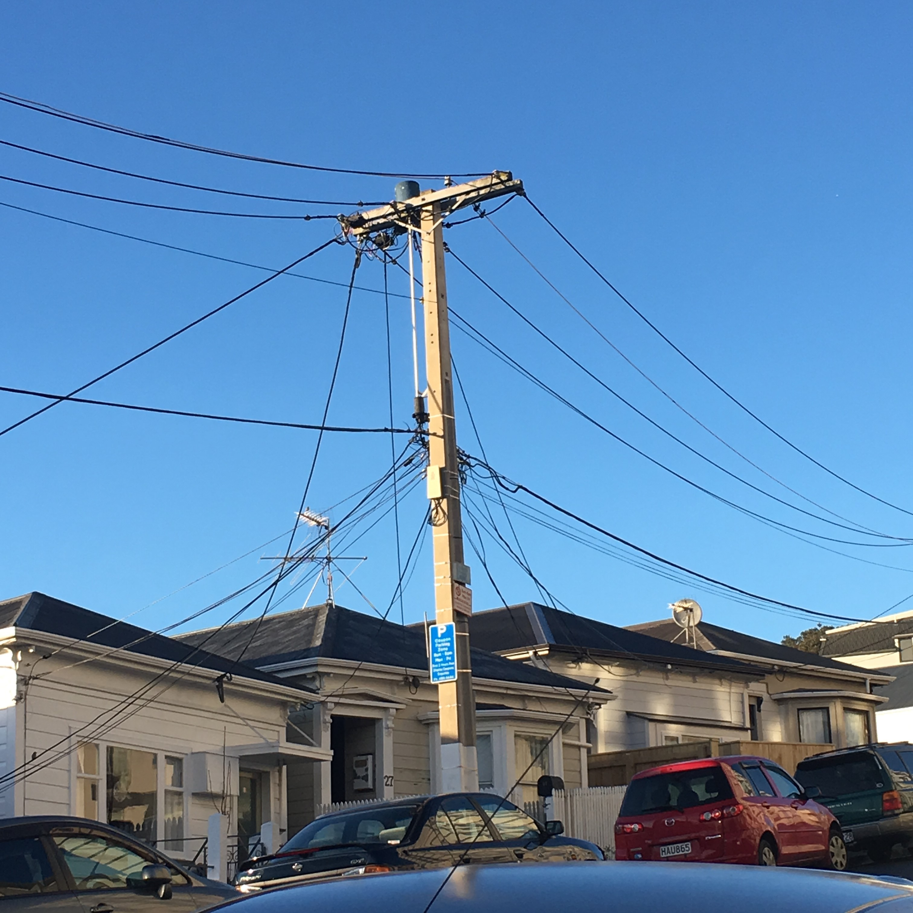
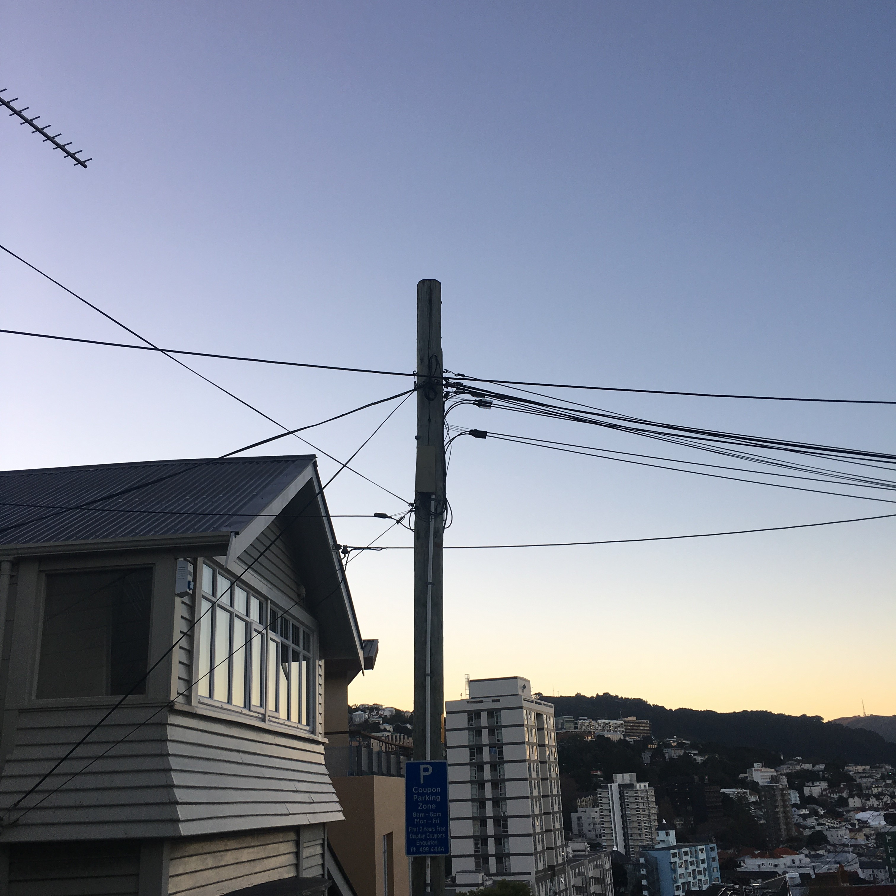

Electricity Tower
The Electricity Tower is a Structure which carries High-Voltage Electricity Lines from Power Generation Plants to local Substations.
Refer to LiveStrong's website for more information.

Main Power Pole
The Wooden Power pole is very common in and around Central Wellington. It connects the power recieved from the local substations to the surrounding areas so that households and businesses can run their day-to-day operations.

Secondary Power Pole
Shown above is a Secondary Power Pole which I found in the Wellington suburb of Mount Cook. Secondary Power Poles are smaller Power Poles which allow lines to connect to the main Wooden Power Poles on the other side of the street.
As Power Poles mainly run on one side of the road, the Secondary Power Pole allows households which are on the opposing side of the street to connect directly to Main Power Lines.